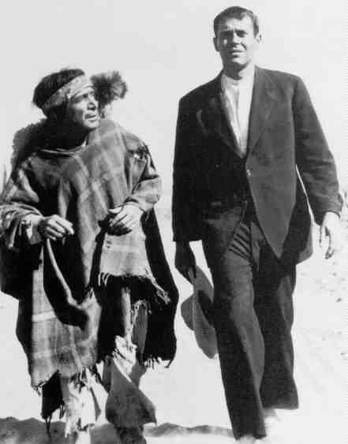

Fugitive, The(1947) B-, B US/1947/B&W/Fullscreen 1.33:1/Mono/99 minutes/Directed by John Ford/Starring Henry Fonda, Delores Del Rio/Turner/ 11 Chaps/CLV/$39.95 Not typical fare from master director Ford, The Fugitive takes place in anonymous Central American country in the throes of revolution. The priests have been banned from the country. Henry Fonda is the last remaining man of the cloth. Fonda's priest must search his conscience as he treks through the country debating whether or not to stay and give more communion. The Fugitive has been shot and conceived in a highly stylized manner. There are few elements of reality that come through and many scenes are marred by some stodgy directing and heavy handed acting in supporting roles. Fonda is fine as the wavering Father,  but every scene played by Pedro Armendarez is difficult to take. He is stiff beyond belief. Ford chooses to flatter Delores Del Rio with a multitude of bucolic gauze-filtered close-ups that do little to advance the narrative.The one outstanding aspect of the film is the exquisite black and white photography of Mexican Gabriel Figueroa. Figueroa was famous for "painting with light," and indeed, many of the scenes in The Fugitive are wonderfully shot. Use of long shadows and dramatic spears of light raise the level of this film. On he opposite end, the accompanying score is often cacophonous and detracts from most of the action sequences. It is possible that the music tracks were not in good relative level to the rest of the film. The disc has decent black and white contrasts and the transfer print exhibits only slight deterioration. There are a fare share of snits and a number of poor splices. The sound is not very satisfying. Still, there is the superb photography that can be amply appreciated on this disc. |